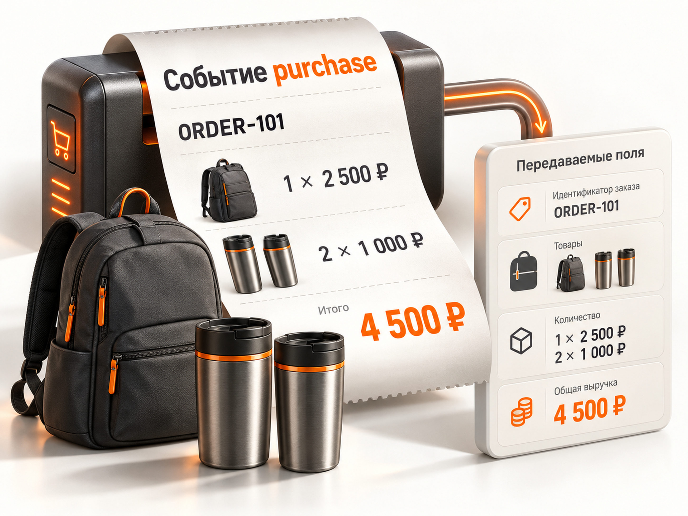

Блог о платном трафике
Электронная коммерция в Яндекс Метрике: что это и как настроить
Электронная коммерция (Ecommerce) в Яндекс Метрике - это инструмент аналитики интернет-магазина, который собирает данные о просмотрах товаров, добавлениях в корзину, заказах и доходе. Он помогает определить, какие товары покупают и сколько выручки приносят разные источники трафика, включая Яндекс Директ.
Чтобы настроить Ecommerce, нужно включить электронную коммерцию в счётчике Метрики, организовать передачу товарных событий с сайта и проверить корректность данных. Для Tilda и некоторых CMS доступны готовые интеграции. На самописных сайтах обычно требуется настройка через JavaScript и контейнер `dataLayer`.
Главное преимущество Ecommerce перед обычной целью «Заказ оформлен» заключается в том, что можно анализировать не только количество покупок, но и их стоимость, состав и связь с рекламой.
Что такое электронная коммерция в Яндекс Метрике
Электронная коммерция позволяет отслеживать действия покупателей и связывать их с конкретными товарами и заказами.
Например, посетитель открыл карточку товара, добавил его в корзину и оформил заказ на 4 500 рублей. При корректной настройке Метрика может получить информацию о каждом из этих действий, включая стоимость и количество купленных товаров.
Эти сведения используются в отчётах по электронной коммерции, а данные о покупках и доходе могут учитываться при анализе и оптимизации кампаний Яндекс Директа.
Важно учитывать ограничение: событие покупки отражает тот этап, на котором сайт его отправил. Если событие передаётся при оформлении заказа до оплаты, сумма в Метрике ещё не означает фактически полученные деньги.
Чем Ecommerce отличается от обычной цели Метрики
Обычная цель фиксирует выполнение определённого действия. Электронная коммерция передаёт информацию о самом заказе и его товарах.
| Обычная цель | Электронная коммерция |
|---|---|
| Фиксирует факт заказа | Передаёт заказ и товары |
| Показывает количество конверсий | Позволяет анализировать заказы и доход |
| Не содержит состав корзины | Передаёт товары, цены и количество |
| Может использовать назначенную ценность цели | Получает стоимость из данных покупки |
| Подходит для контроля отдельных действий | Подходит для товарной аналитики |
Предположим, один покупатель заказал товар на 2 000 рублей, а другой - на 25 000 рублей.
Обычная цель покажет два достижения. Если передавать покупки через Ecommerce, можно дополнительно увидеть стоимость каждого заказа и выяснить, какой рекламный источник привёл более дорогую покупку.
При этом обычная цель тоже может учитывать денежную ценность, если её правильно настроить. Отличие Ecommerce не только в сумме, но и в детализации товаров и заказов.
Для полноценного интернет-магазина электронная коммерция обычно полезнее одной цели покупки, особенно когда ассортимент и средний чек существенно различаются.
Какие события и данные передаёт Ecommerce
Яндекс Метрика поддерживает несколько типов событий электронной коммерции. Они позволяют анализировать путь покупателя от знакомства с товаром до заказа.
| Событие | Что фиксирует |
|---|---|
| `impressions` | Просмотр списка товаров |
| `click` | Клик по товару в списке |
| `detail` | Просмотр карточки товара |
| `add` | Добавление в корзину |
| `remove` | Удаление из корзины |
| `purchase` | Покупку |
| `promoView` | Просмотр внутренней рекламы |
| `promoClick` | Клик по внутренней рекламе |
В зависимости от события можно передавать идентификатор товара, название, цену, количество, категорию, бренд, вариант и другие параметры.
Для рекламной аналитики наибольшее значение имеет `purchase` - событие покупки. Оно позволяет связать заказ с доходом.
Если задача заключается только в оценке количества и стоимости заказов, настройку можно начать с покупки. Если нужно анализировать поведение покупателей и потери в товарной воронке, дополнительно потребуются события просмотра товаров, добавления и удаления из корзины.
Как настроить электронную коммерцию в Яндекс Метрике
Настройка Ecommerce состоит из четырёх этапов: включения функции в счётчике, выбора способа передачи данных, настройки событий на сайте и проверки их корректности.
Шаг 1. Включить электронную коммерцию в счётчике
- Откройте Яндекс Метрику.
- Выберите счётчик интернет-магазина.
- Перейдите в настройки счётчика.
- Включите опцию «Электронная коммерция».
- Убедитесь, что контейнер данных указан правильно. Стандартное название - `dataLayer`.
- Сохраните изменения и проверьте актуальность кода счётчика на сайте.
В коде счётчика должен использоваться параметр `ecommerce: true` либо `ecommerce: "dataLayer"` с соответствующим именем контейнера.
Сама по себе эта настройка не гарантирует поступление данных. Сайт должен формировать Ecommerce-события и передавать их в Метрику.
Шаг 2. Выбрать способ подключения
Способ внедрения зависит от платформы интернет-магазина.
| Платформа | Как подключать |
|---|---|
| Tilda | Через встроенную интеграцию |
| WordPress / WooCommerce | Через совместимый плагин |
| 1С-Битрикс | Через модуль или готовую интеграцию |
| OpenCart | Через модуль Метрики |
| Самописный магазин | Через JavaScript и `dataLayer` |
| Сайт с GA4 Ecommerce | Проверить совместимую передачу уже настроенных событий |
Яндекс поддерживает совместимость с форматами Google Analytics Enhanced Ecommerce и GA4 Ecommerce. Если электронная торговля уже реализована, данные могут поступать в Метрику без дублирования всей разметки. Но фактическую передачу и правильность заказов всё равно необходимо проверить.
Для ручной настройки понадобится доступ к коду сайта или помощь разработчика.
Шаг 3. Настроить передачу событий
При ручной интеграции сайт передаёт информацию через JavaScript-массив `window.dataLayer`.
Принцип работы следующий:
- Посетитель выполняет действие с товаром.
- Сайт формирует объект с параметрами действия.
- JavaScript добавляет объект в `dataLayer`.
- Счётчик Метрики обрабатывает данные.
- Информация поступает в отчёты.
Для отправки объекта используется метод `push()`.
Например, событие `add` должно возникать при фактическом добавлении товара в корзину, а `purchase` - после успешного формирования заказа.
Не следует отправлять покупку только по нажатию кнопки оформления заказа. Пользователь может не завершить процесс, а переход на другую страницу способен прервать передачу данных.
Шаг 4. Проверить результат
После настройки необходимо создать тестовый заказ, проверить отправленные события и убедиться, что они учитываются в Метрике.
Особенно важно сопоставить идентификатор заказа, количество товаров, цены и переданную сумму.
Настройка Ecommerce на Tilda, WordPress и других CMS
Как подключить электронную коммерцию на Tilda
Для стандартного интернет-магазина на Tilda отдельная ручная JavaScript-интеграция обычно не требуется.
По инструкции Яндекса достаточно:
- Убедиться, что счётчик Метрики подключён к сайту.
- Включить электронную коммерцию в настройках счётчика.
- Переопубликовать все страницы сайта.
- Выполнить тестовый заказ и проверить данные.
Чтобы получать статистику просмотров товаров, можно использовать каталог товаров Tilda.
Для передачи добавлений в корзину у блока ST100 предусмотрена отдельная настройка отправки данных в системы аналитики.
Эти рекомендации относятся к штатным возможностям Tilda. Если корзина или оформление заказа реализованы нестандартным кодом, потребуется дополнительная проверка событий.
Настройка через плагины CMS
Для популярных CMS Яндекс предлагает интеграции, включая WordPress, OpenCart и 1С-Битрикс.
Обычно последовательность выглядит так:
- Установить совместимый модуль.
- Указать или подключить нужный счётчик.
- Включить Ecommerce.
- Проверить отправку покупок и товарных событий.
Не стоит одновременно включать несколько модулей, которые передают одни и те же покупки. Это может привести к дублированию событий.
Настройка на самописном сайте
Для собственного интернет-магазина разработчик должен определить, какие действия покупателей нужно отслеживать, какие данные доступны в момент события и каким способом они будут отправляться в `dataLayer`.
Приоритет следует отдавать достоверной передаче покупки. На первом этапе важнее получить правильное количество заказов и их стоимость, чем настроить множество дополнительных товарных событий с ошибками.
Выбор способа зависит от платформы и доступных технических возможностей.
Пример кода Ecommerce для передачи покупки
При ручной настройке Ecommerce ключевым событием является `purchase`. В его объекте указываются идентификатор заказа и список купленных товаров.
Ниже приведён упрощённый пример передачи одного заказа через `dataLayer`.
```javascript window.dataLayer = window.dataLayer || [];
window.dataLayer.push({ ecommerce: { currencyCode: "RUB", purchase: { actionField: { id: "ORDER-101", revenue: 4500 }, products: [ { id: "SKU-001", name: "Рюкзак", price: 2500, quantity: 1 }, { id: "SKU-002", name: "Термокружка", price: 1000, quantity: 2 } ] } } }); ```
Это демонстрационный код, а не готовый скрипт для любого магазина. В рабочей интеграции идентификатор заказа, товары и суммы должны подставляться из данных сайта после подтверждения заказа.
В данном примере:
- `currencyCode` - валюта заказа, RUB.
- `purchase` - событие покупки.
- `actionField.id` - уникальный идентификатор заказа.
- `revenue` - передаваемый доход, 4 500 рублей.
- `products` - список купленных товаров.
- `price` - цена единицы товара.
- `quantity` - количество единиц товара.
Покупатель приобрёл один рюкзак за 2 500 рублей и две термокружки по 1 000 рублей. Общая стоимость товаров составляет 4 500 рублей.

Параметр `revenue` можно не передавать. Согласно документации Яндекса, тогда доход рассчитывается на основании стоимости товаров. Однако при наличии скидок, доставки и особенностей расчёта итоговой суммы лучше явно определить, какое значение магазин считает доходом заказа.
Важно: идентификатор заказа необходимо передавать корректно, а повторную отправку покупки при обновлении страницы или повторном выполнении скрипта предотвращать на стороне сайта. Это снижает риск искажения статистики.
В документации Яндекса также указано ограничение на размер передаваемого контейнера данных - 8192 символа. Крупные заказы требуют отдельной обработки.
Как проверить, работает ли электронная коммерция
Проверить Ecommerce можно через инструменты отладки Яндекс Метрики. В актуальной версии счётчика доступна специальная панель, которая показывает передаваемые события.
Порядок проверки:
- Откройте страницу магазина, добавив к URL параметр `_ym_debug=2`.
- Выполните нужное действие, например добавьте товар в корзину.
- Откройте появившуюся панель отладки.
- Перейдите на вкладку Ecommerce.
- Проверьте, что событие передано с корректными параметрами.
- Оформите тестовый заказ и аналогично проверьте `purchase`.
Если новый отладчик недоступен, можно использовать консоль браузера и режим `_ym_debug=1`.
Для просмотра данных контейнера в консоли используется команда:
```javascript JSON.stringify(window.dataLayer) ```
Если вместо данных возникает ошибка `dataLayer is not defined`, необходимо проверить, создан ли массив данных на странице.
Если массив существует, но нужного события в нём нет, следует проверить код, который должен формировать и отправлять событие.
После первой успешной передачи отчёты электронной коммерции обычно становятся доступны в течение нескольких часов. Отсутствие данных в обычном отчёте сразу после тестового заказа ещё не доказывает неисправность настройки.
Почему Ecommerce не работает: ошибки и решения
Если данные электронной коммерции не поступают в Яндекс Метрику, сначала нужно проверить счётчик, контейнер данных и момент отправки события.
| Проблема | Возможная причина | Что проверить |
|---|---|---|
| Нет данных Ecommerce | Функция выключена или события не отправляются | Настройки счётчика и `dataLayer` |
| Нет покупок | Не отправляется `purchase` | Скрипт подтверждения заказа |
| Нет суммы заказа | Ошибка в `revenue` или ценах товаров | Состав и стоимость заказа |
| Заказы задваиваются | Повторная отправка события | Логику срабатывания скрипта |
| Есть покупки, но нет просмотров товаров | Передаётся только `purchase` | События `detail` и `impressions` |
| Часть событий теряется | Переход со страницы происходит слишком быстро | Момент отправки данных |
| Неполная товарная статистика | Неполные или некорректные поля | Идентификаторы, названия, количество |
При диагностике полезно сначала проверить один конкретный заказ и сопоставить данные сайта с объектом, попавшим в контейнер.
Не стоит подключать оптимизацию Яндекс Директа по доходу, пока не проверена достоверность сумм покупок. Ошибки в передаче стоимости заказов способны исказить оценку эффективности рекламы.
Отдельно следует проверить, не блокируется ли счётчик расширениями браузера и не мешают ли передаче события ошибки JavaScript или перенаправления.
Где смотреть электронную коммерцию в Метрике
После поступления данных откройте раздел «Отчёты», затем «Электронная коммерция».
В нём доступны отчёты по источникам заказов, купленным товарам, содержимому корзины, популярным категориям, брендам и другим показателям.
Для интернет-магазина наиболее полезны следующие направления анализа:
| Отчёт | Что можно узнать |
|---|---|
| Источники заказов | Какие каналы приводят покупки и доход |
| Содержимое заказов | Какие товары входят в заказы |
| Заказанные товары | Что фактически заказывают посетители |
| Товары в корзине | Какие товары добавляют в корзину |
| Популярные категории и бренды | Какие товарные группы вызывают интерес |
| Ecommerce-воронка | На каких этапах возникают потери покупателей |
Например, в отчёте по источникам заказов можно сравнивать результаты Яндекс Директа, органического поиска и других каналов.
При анализе важно учитывать модель атрибуции, период и выбранные условия отчёта. Покупка может быть связана с несколькими посещениями сайта, поэтому доход не всегда правильно приписывать исключительно последнему рекламному переходу.
Подробнее о различиях моделей: Атрибуция в Яндекс Метрике.
Как использовать Ecommerce в Яндекс Директе
Данные электронной коммерции позволяют оценивать рекламу интернет-магазина по заказам и доходу, а не только по кликам и количеству конверсий.
При корректной передаче покупки Метрика формирует Ecommerce-цель, доступную для использования в Яндекс Директе. Доход от покупок помогает анализировать результативность рекламных кампаний.
Один из основных показателей для интернет-магазина - ДРР, доля рекламных расходов в доходе.
ДРР = расходы на рекламу / доход от рекламы × 100%.
Предположим, магазин потратил на рекламную кампанию 30 000 рублей, а переданные покупки принесли 150 000 рублей дохода.
ДРР составит 20%.
Это означает, что рекламные расходы равны 20% от полученного дохода. Но сама по себе такая доля ещё не говорит о прибыльности: необходимо учитывать себестоимость, доставку, комиссии, налоги и другие затраты.
Если электронная коммерция настроена корректно и кампания получает достаточно достоверных конверсий, данные о покупках могут использоваться в автоматических стратегиях Директа, в том числе при оптимизации по доле рекламных расходов.
Подробнее: ДРР в рекламе: как считать и оценивать.
Реальный пример: интернет-магазин японской косметики
В моём проекте интернет-магазина японской косметики электронная коммерция уже была настроена до запуска рекламных кампаний.
Это позволило оценивать результат не только по количеству заказов, но и по переданной выручке.
За первые 20 дней работы Яндекс Директа были получены следующие показатели:
| Показатель | Результат |
|---|---|
| Расходы на рекламу | 64 227 ₽ |
| Доход от заказов | 656 806 ₽ |
| Покупки | 46 |
| Средний чек | 14 278 ₽ |
| Средняя стоимость покупки | 1 396 ₽ |
| ДРР | 9,78% |
| ROAS | 10,23 |
Средняя стоимость покупки рассчитывается делением рекламных расходов на количество покупок:
64 227 / 46 = 1 396 рублей.
ДРР рассчитывается как 64 227 / 656 806 × 100% = 9,78%.
ROAS показывает отношение дохода от рекламы к расходам: 656 806 / 64 227 = 10,23. То есть на каждый рубль рекламных расходов пришлось приблизительно 10,23 рубля дохода от заказов.
Показатели ДРР, ROAS и стоимости покупки здесь рассчитаны по данным этого конкретного проекта, а не являются средними значениями рынка.
Без Ecommerce можно было бы подсчитывать достижения обычной цели оформления заказа. Но при работе с интернет-магазином гораздо полезнее анализировать и стоимость заказов, потому что разные кампании могут приводить покупателей с разным средним чеком.
При этом зафиксированный доход от заказов не равен чистой прибыли и не подтверждает, что все заказы были оплачены и не возвращены.
Полный разбор: Кейс продвижения интернет-магазина японской косметики.
Можно ли считать Ecommerce сквозной аналитикой
Электронная коммерция связывает источники трафика с заказами и доходом, но сама по себе не заменяет полноценную сквозную аналитику.
Для интернет-магазина Ecommerce решает важную часть задачи: позволяет определить, какие рекламные каналы приводят покупателей, что они заказывают и сколько стоят покупки.
Однако для расчёта реального финансового результата могут потребоваться дополнительные данные:
- фактическая оплата заказов;
- отмены и возвраты;
- себестоимость товаров;
- стоимость доставки;
- комиссии и другие расходы;
- повторные покупки;
- информация из CRM и учётной системы.
Если магазин принимает заказы на сайте, но значительная часть из них оплачивается позже или отменяется, одного события `purchase` недостаточно для точного расчёта прибыли.
Поэтому электронную коммерцию правильнее считать основой аналитики продаж на сайте, а не полноценной заменой финансового учёта.
Подробнее: Сквозная аналитика Яндекс Директа.
Нужна ли электронная коммерция каждому интернет-магазину
Ecommerce особенно полезна магазинам, которые привлекают платный трафик, продают товары с разной стоимостью и хотят анализировать рекламу по доходу.
Если на сайте есть полноценная корзина и оформление заказа, рекомендую настроить как минимум корректную передачу покупок. Для более подробного анализа ассортимента и поведения покупателей стоит дополнительно отслеживать просмотры товаров и действия с корзиной.
Для небольшого сайта услуг с одной формой заявки такая настройка может быть избыточной. Там зачастую достаточно правильно настроенных целей Метрики и передачи данных о продажах из CRM.
Перед использованием Ecommerce в рекламных стратегиях необходимо убедиться, что:
- покупки фиксируются однократно;
- идентификаторы заказов передаются корректно;
- суммы и количество товаров соответствуют заказам;
- события не теряются при оформлении;
- данные Метрики сопоставимы с учётной системой с поправкой на атрибуцию, блокировки и задержки.
Главный вывод: настройка электронной коммерции в Яндекс Метрике нужна не ради дополнительных отчётов. Её задача - показать, какие товары и заказы приносит реклама, сколько дохода они формируют и какие кампании действительно имеют коммерческую ценность.